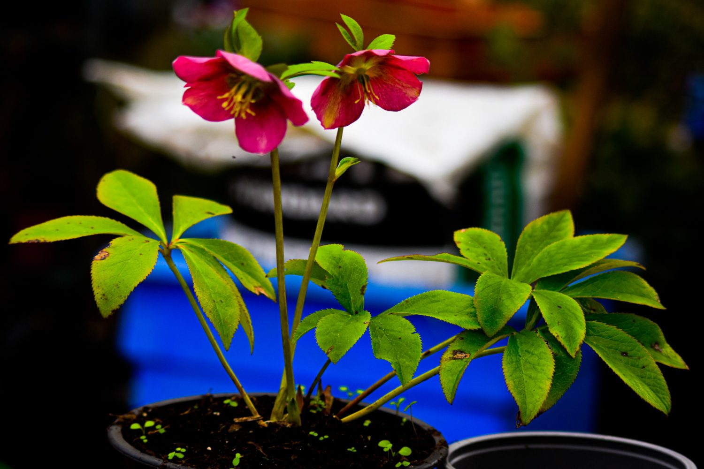

I'm Pablo Allegrini, a photographer based in Limerick, Ireland. Between the kitchen and the code, photography became the meeting point of those two obsessions: attention to detail, and the patience to wait for the right moment.
I mostly photograph landscape, light and texture — bare branches against the sky, the tide pulling back over the pebbles, the grey, shifting weather of the Irish coast. I prefer to let the scene speak for itself, with little editing.
Most of the work happens close to home, on short walks — it's less about travelling far and more about paying attention to where you already are. A good photo, to me, is usually about waiting five more minutes than felt necessary.
More photos on Instagram @pp.allegrini, or in the full gallery.